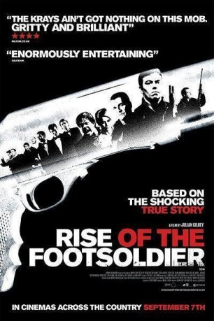

#8210 Footsoldier - Hooligan, Gangster, Legende
Alternativ: Rise of the Footsoldier
 
 IMDB-Wertung: 6.9 / 10
IMDB-Wertung: 6.9 / 10  Metascore: 0
Metascore: 0 
Rise of the Footsoldier follows the inexorable rise of Carlton Leach from one of the most feared generals of the football terraces to becoming a member of a notorious gang of criminals who rampaged their way through London and Essex in the late eighties and early nineties. It is three decades of his life following him from football hooliganism, through to his burgeoning career as a bouncer, his involvement in the criminal aspects of the early 'rave' scene and subsequently to his rise to power as one of the most feared and respected criminals in the country.
Jahr: 2007
Dauer: 114 Minuten
FSK: Not Rated
Land: England Studio: Ascot Elite Home EntertainmentTonspuren: DTS - ,
Untertitel:
Auflösung: 1080p (1920x1040) Größe: 10065 MB
Genre: Action, Drama, Krimi, Biographie
Regisseur: Julian Gilbey
Drehbuch: Julian Gilbey
Soundtrack: Ross Cullum, Sandy McLelland
Darsteller:
- Ricci Harnett als Carlton Leach
 Terry Stone als Tony Tucker
Terry Stone als Tony Tucker Craig Fairbrass als Pat Tate
Craig Fairbrass als Pat Tate Roland Manookian als Craig Rolfe
Roland Manookian als Craig Rolfe Neil Maskell als Darren Nicholls
Neil Maskell als Darren Nicholls- Billy Murray als Mickey Steele
 Ian Virgo als Jimmy Gerenuk
Ian Virgo als Jimmy Gerenuk Kierston Wareing als Kate Carter
Kierston Wareing als Kate Carter- Patrick Regis als Eddie
- Lara Belmont als Karen
- Emily Beecham als Kelly
 Frank Harper als Jack Whomes
Frank Harper als Jack Whomes- Jason Maza als Rob
 Mark Killeen als Terry
Mark Killeen als Terry Dave Legeno als Big John
Dave Legeno als Big John- Zafer El-Abedin als Emre Baran
- Mitchell Lewis als Kemal Baran
- Eden Ford als Paul
 Derek Lea als Gardner's Enemy
Derek Lea als Gardner's Enemy- Joe Dixon als Mr. Khan
- Kieran Bew als Ricky
- Toby Richards als Sledge
 Winston Ellis als Morris
Winston Ellis als Morris- Calum MacNab als John Kennedy
- Marc Zammit als Under 5
 Simon Meacock als Ecstacy Killer
Simon Meacock als Ecstacy Killer- Steve Daly als Mr. Gerenuk
- Adam Saint als Hexell Brother
- Jimmy Flint als Hexell Brother
 Eric Lampaert als Pizza Staff
Eric Lampaert als Pizza Staff- Liam Scott als Farmer
- Nichola Fynn als Mid-Wife (uncredited)
 Philip Howard als 1 of Carlton's ICF boys (uncredited)
Philip Howard als 1 of Carlton's ICF boys (uncredited)- Grant Kempster als ICF Member (uncredited)
- Andrew Loveday als Guy in Smashed Up Car (uncredited)
- Coralie Rose als Denny
- Andy Linden als Peter Dunsdale
- George Calil als Police Killer
- Jay Taylor als Chris Wightman
- Phillip Weddell als Young Carlton
- Brendan Carr als Jason
- Rhys Williams als Andy Riot
- Stuart Moore als Bill Gardner
- Richard Saade als Barak
- Andy Ktitsi als Turkish Heavy
- Jo Jo Mitchell als Turkish Heavy
- David Jacobs als Turkish Heavy
- Ibrahim Othman als Turkish Heavy
- Nicola Paige als Lucy
- Georgie Lee-Robinson als Stacey
Datei: X:\FSK18-Collections\Footsoldier\Footsoldier - Hooligan, Gangster, Legende (2007, FSKNot Rated, 1920x1040).mkv seit 07.02.2018
Festplatte: FSK18
 Es gibt insgesamt 7 Filme in der Gruppe 'FSK18-Collections\Footsoldier'
Es gibt insgesamt 7 Filme in der Gruppe 'FSK18-Collections\Footsoldier'